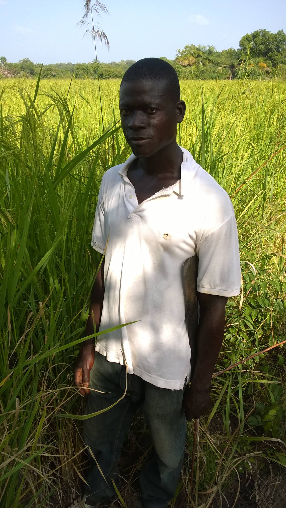

LES CULTURES VIEVRIERE DE LA COMMUNE DE BOROTOU
Borotou est une localité située au nord-ouest de la Côte d'Ivoire et appartenant au Département de Koro, dans la Région du Bafing. La localité de Borotou est un chef-lieu de commune.
les principales cultures vivrieres de la commune sont entre autre le riz, l' igname, le mais, le mil, la paptate. la situation geographique favorise la culture de la casi totalites de vivriers de l afrique subsaharienne. la vegetation est savanueuse et tres fertile.
